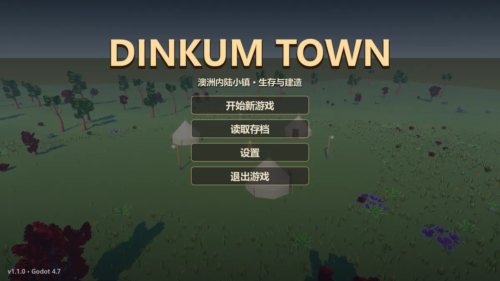
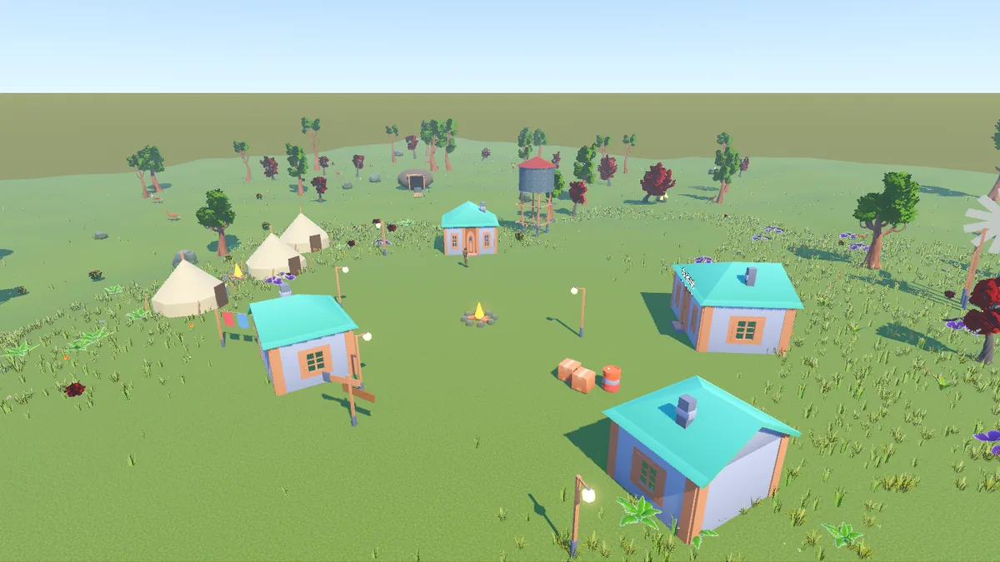
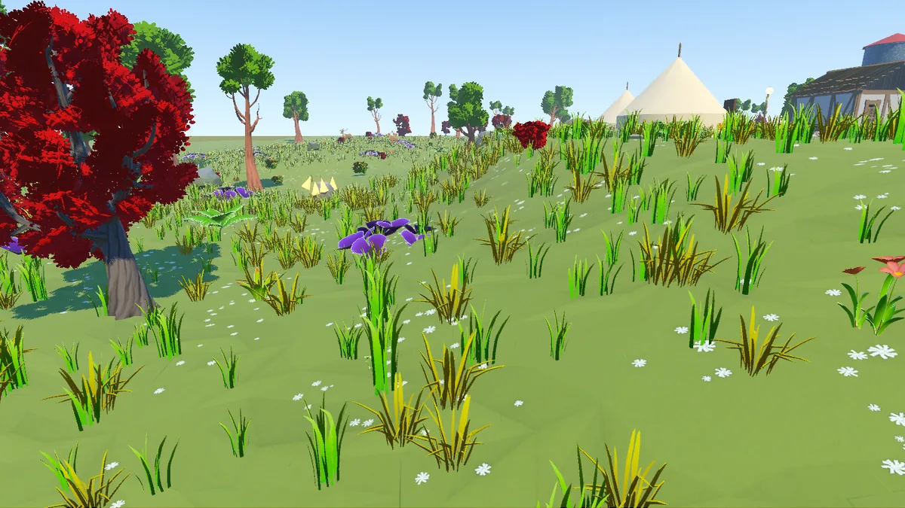
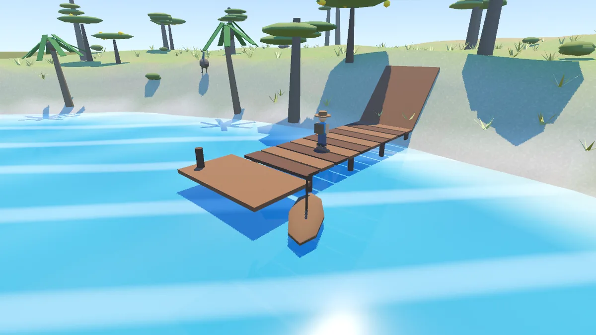
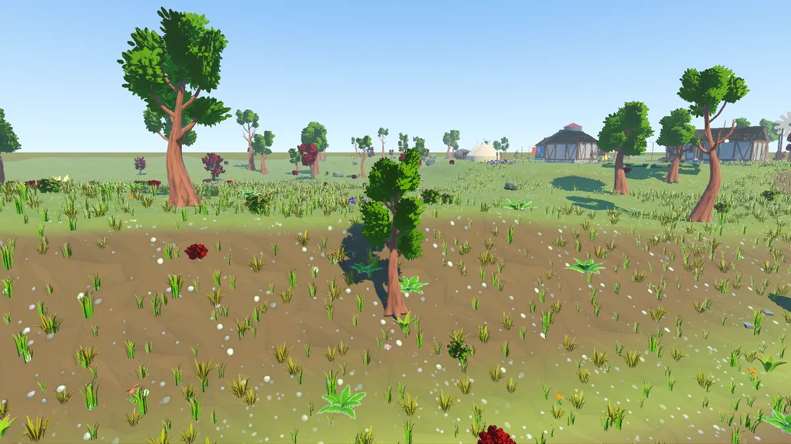
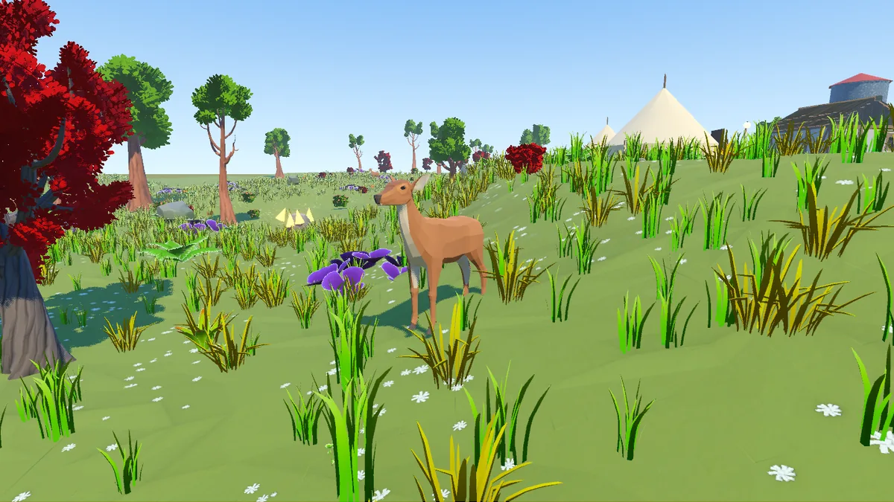
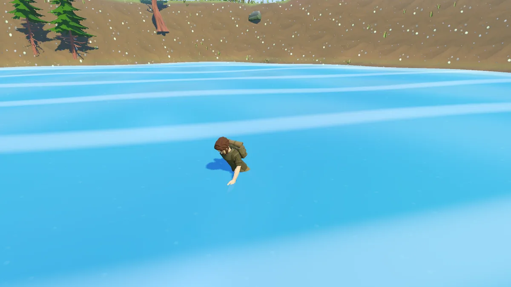
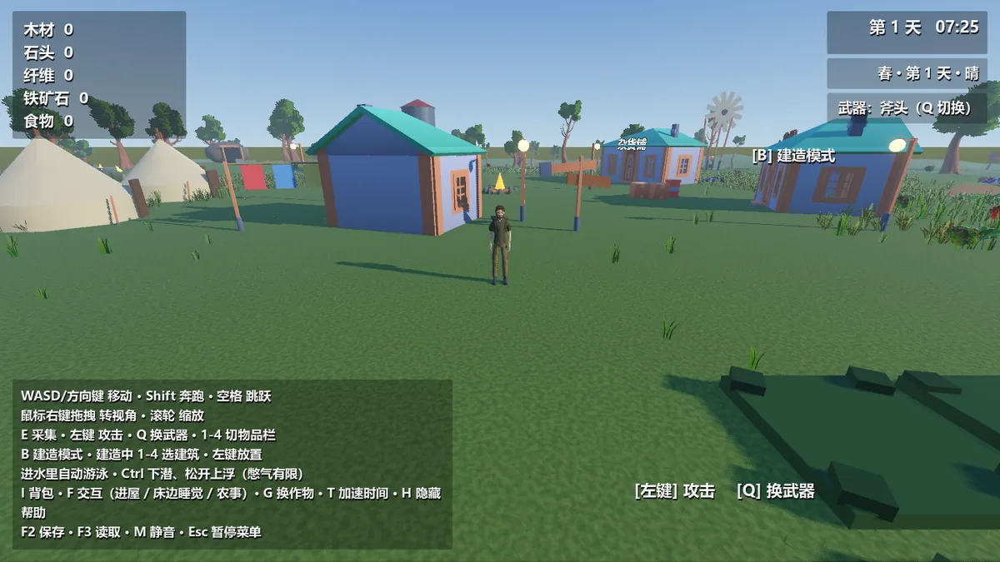
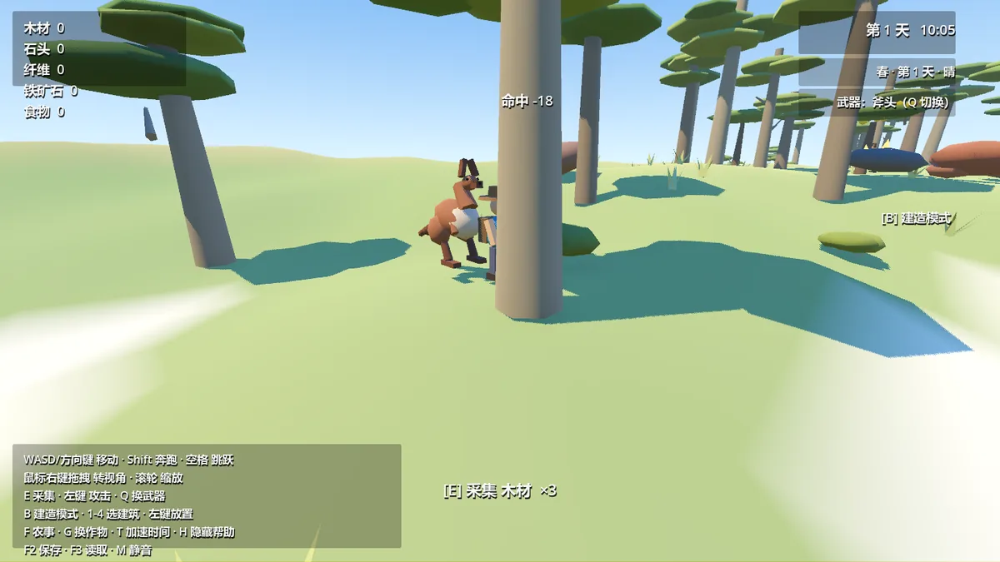
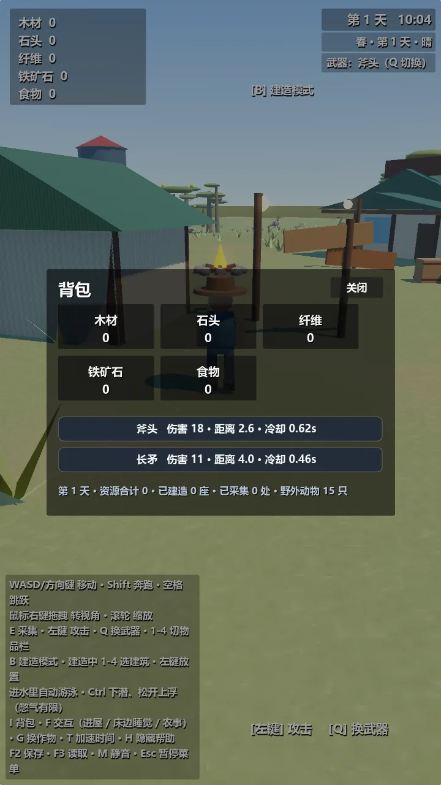

采集与资源
木材、石头、纤维、铁矿石、食物五种基础资源。走到树边、石边按 E 就能采集，砍倒的树会留下树桩。
E采集 / 交互
澳洲内陆小镇 · 生存与建造
低多边形风格的第三人称沙盒游戏。整张地图由种子程序化生成——伐木采石、盖房建镇、开荒种地、追踪狩猎， 在昼夜与四季流转中把一片荒野变成自己的小镇。免费下载，单文件免安装。
没有任务列表，也没有必须走的主线。你想先盖房子还是先种地，全凭当天心情。
木材、石头、纤维、铁矿石、食物五种基础资源。走到树边、石边按 E 就能采集，砍倒的树会留下树桩。
按 B 进入建造模式，数字键选建筑，左键落位、R 旋转朝向。从帐篷、木屋到水塔路灯，小镇由你一格一格长出来。
翻地、播种、浇水、收获。按 G 切换作物，作物随季节与时间生长，收成直接进背包当食物。
斧头与长矛两套武器，伤害、攻击距离和冷却各不相同，按 Q 切换。袋鼠、鸸鹋等动物会游走、逃跑，也会反击。
太阳落下去，天真的会黑，夜里要靠路灯照明。春夏秋冬轮转，天气会下雨，季节影响植被与作物。
走进水里会自动切换成游泳姿态，按 Ctrl 或 C 下潜。水下有独立的遮罩与憋气条，气用光了会很难受。
全部来自游戏的实际运行画面。点开可以放大看。










当前版本 v1.2.0，构建于 2026-10-06，基于 Godot 4.7.2。 安装包已内置全部模型、动画、材质与贴图，不需要另外安装 Godot 或任何运行库。
com.dinkumtown3d.app，v2 / v3 签名已验证%APPDATA%\Godot\app_userdata\Dinkum Town 3D\，和 EXE 放在哪无关。下载完成后可以对照上面的 SHA-256 校验值，确认文件没有在传输中被损坏或被替换。
PowerShell 一行命令：
输出与上方的哈希一致即为完整。
想从源码运行？克隆仓库，用 Godot 4.7.2 打开 project.godot 按 F5 即可。
全部运行时资源都已随 Git 提交，无需 Git LFS 或额外下载素材。
查看源码仓库 →
键盘鼠标一套，触屏一套。界面会随分辨率自动缩放，设置里还能调画质和摇杆布局。
| 操作 | 键鼠 |
|---|---|
| 移动 / 跑步 / 跳跃 | WASD 或方向键 / Shift / 空格 |
| 视角 / 相机距离 | 按住鼠标右键拖动 / 滚轮 |
| 攻击 / 切换武器 | 鼠标左键（非建造模式）/ Q |
| 采集 / 农事与交互 | E / F |
| 背包 / 建造 / 旋转 | I 或 Tab / B / R |
| 切换作物 / 存档 / 读档 | G / F2 / F3 |
| 下潜 / 暂停 / 帮助 | 水中 Ctrl 或 C / Esc / H |
| 加速时间 / 静音 | T / M |
左下角虚拟摇杆控制走动，摇杆推到边缘自动切换跑步。
在屏幕空白区域拖动转视角，双指捏合拉近拉远。
屏幕上的动作键与快捷栏按钮对应采集、攻击、跳跃等操作。
所有 UI 按分辨率等比缩放，8 种常见横竖屏比例均已验证无错位。
Dinkum Town 3D 是一个用 Godot 4.7.2 和 GDScript 从零写出来的低多边形沙盒游戏，全部逻辑开源在 GitHub 上。
地形、植被、道具分布都由一个 map_seed 派生。同一个种子永远长出同一张地图，换个种子就是另一个小镇。
河床、水位、地表高度由地形模块统一提供，其他系统一律向它问数值，不各自记一套高度。
Godot 4.7.2 + GDScript，零外部依赖，仓库里没有任何 addons。Windows 用 Forward+ 渲染器，安卓用 Mobile 渲染器。
整包 119 个资产场景、19 张独立贴图、147 个贴图表面，全部随运行包交付，附带第三方许可文本。
自然、人物、动物模型来自 Quaternius；房屋、家具、容器与道具来自 Kenney。第三方源素材均为 CC0，原始许可保留在 assets/ 各目录下。
地形、水、UI、作物和地表贴图由本项目自行生成。Godot 引擎使用 MIT 许可，声明文件随包交付。
战斗 102 项、水域 38 项、UI 1587 项断言与存档往返测试全部通过；8 种触控分辨率 bad=0。
Windows EXE 实际启动截图通过；APK 的 v2 / v3 签名验证通过。